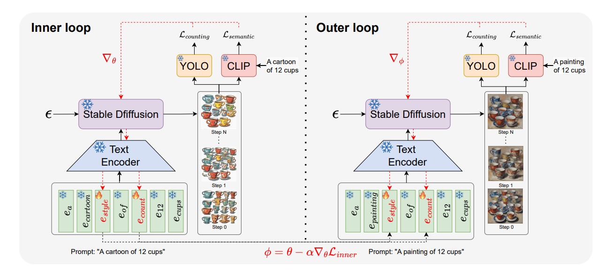
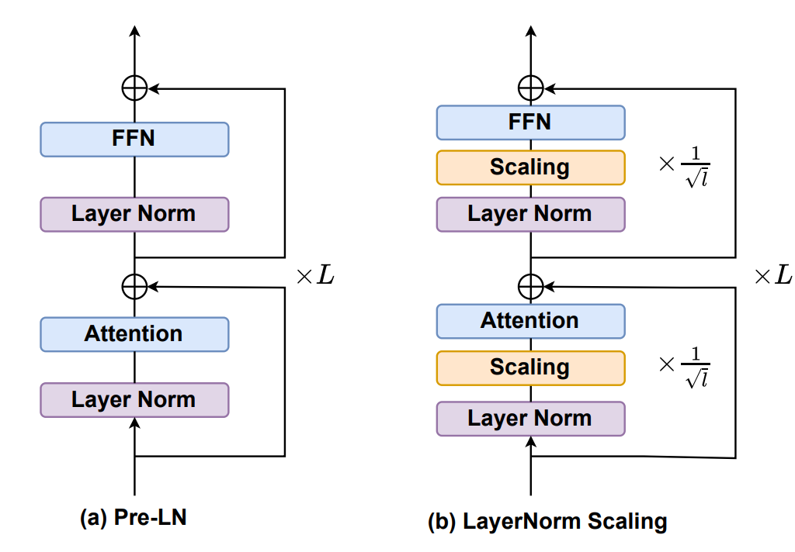
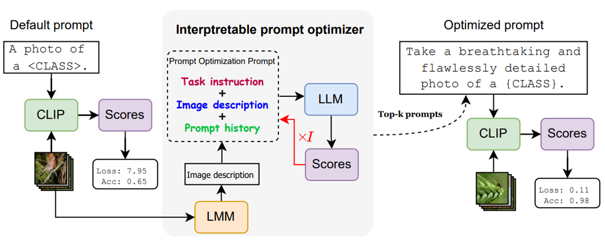
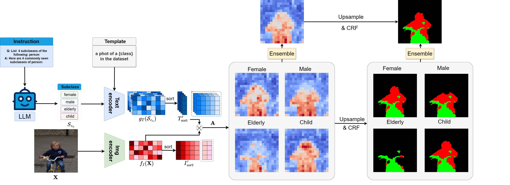
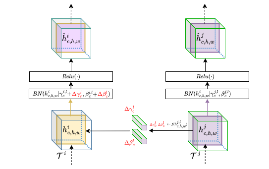

RegionReasoner: Region-Grounded Multi-Round Visual Reasoning
RegionReasoner improves multi-round visual reasoning by grounding each reasoning trace in explicit regions and aligning local visual details with global scene semantics.
I am a first-year Ph.D. student at the University of Amsterdam (UvA) in the VIS Lab, supervised by Prof. Dr. Cees Snoek and Dr. Yingjun Du. My research focuses on multimodal foundation models as part of the Horizon Europe ELLIOT project.
I received my M.Sc. degree from the University of Science and Technology of China (USTC). After graduation, I worked as a research assistant at Westlake University with Prof. Yefeng Zheng. I also received valuable guidance from Dr. Shiwei Liu, Dr. Xiantong Zhen, and Dr. Gaowen Liu.
I welcome all kinds of research collaborations and academic exchanges.
Updates
Selected Publications
RegionReasoner improves multi-round visual reasoning by grounding each reasoning trace in explicit regions and aligning local visual details with global scene semantics.

QUOTA uses a domain-agnostic optimization framework to improve object-count control for text-to-image models across unseen domains without retraining.

LayerNorm Scaling mitigates variance explosion in deep Transformer layers, helping large language models benefit more consistently from depth.

IPO uses language and multimodal models to generate dataset-specific, human-readable prompts that improve generalization for vision-language models.

A training-free semantic segmentation framework that uses large language models to build richer class descriptors and ensemble subclass-level predictions.

MetaModulation increases task diversity in few-shot learning by modulating feature hierarchies, including variational variants for task uncertainty.